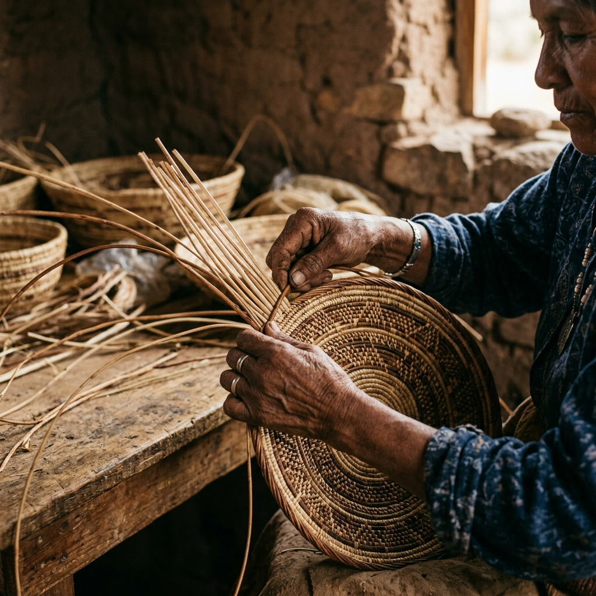

Our Origins
Long before colonial times, the lands of Trinidad and Tobago were inhabited by diverse tribes. Our community traces its lineage primarily to the Aruaca, Nepuyos, and Carinepagoto nations.
Arima, often referred to historically as "Indian Territory", remains the beating heart of our culture. It was here that our ancestors fought to preserve their way of life, guided by leaders like the great Chief Hyarima, a hero of indigenous resistance whose spirit continues to inspire us today.

Our Traditions
Traditional Crafting
We preserve ancient techniques such as weaving with terite reed and mamu vines, creating beautiful, functional art that tells the story of our connection to the land.
The Smoke Ceremony
A sacred practice of offering, gratitude, and seeking guidance. Through the smoke, we connect with the "Great Spirit" and honor the ancestors who walked before us.
Santa Rosa Festival
The oldest continuously celebrated festival in Trinidad and Tobago. This annual celebration honors Santa Rosa de Lima and is a vibrant expression of our enduring culture and community spirit.